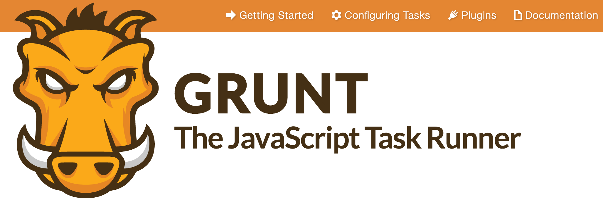
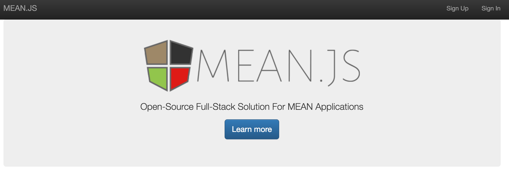
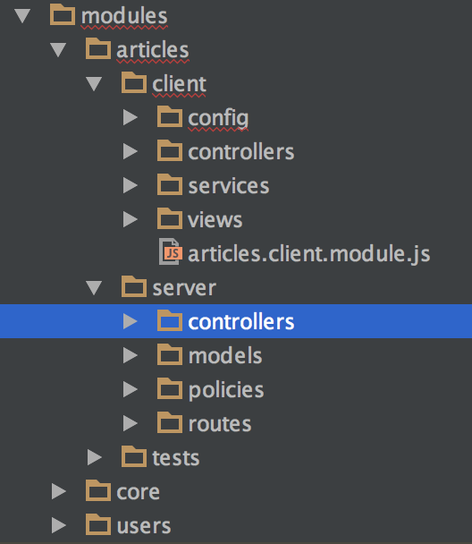
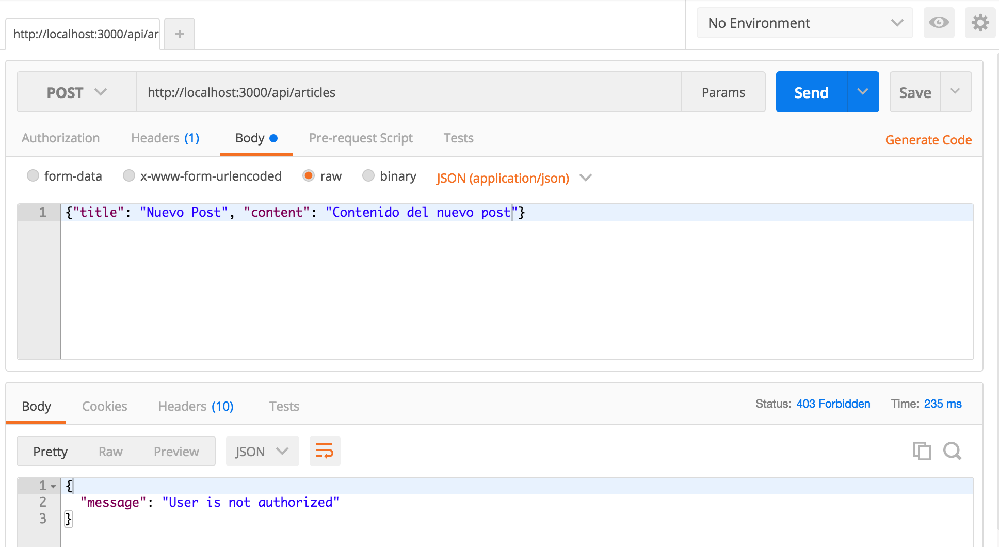
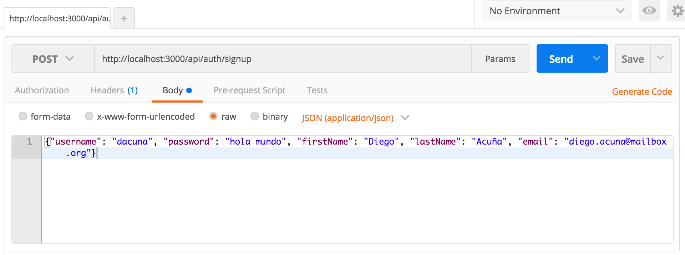
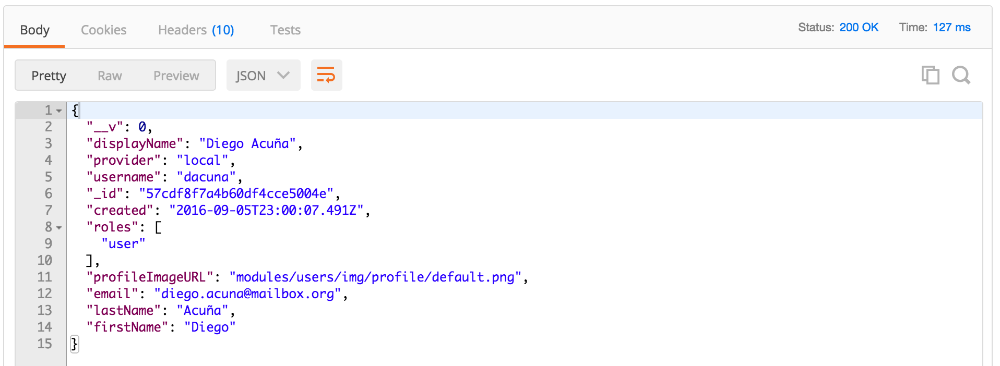
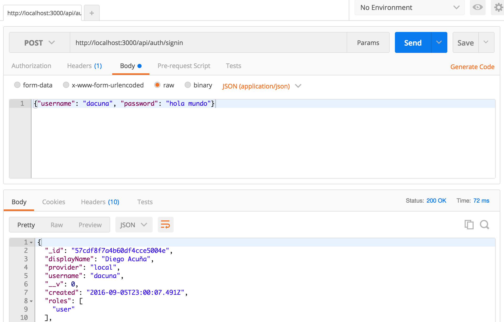
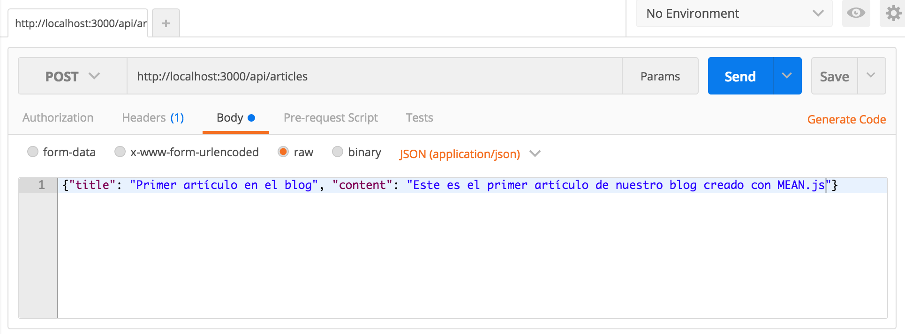
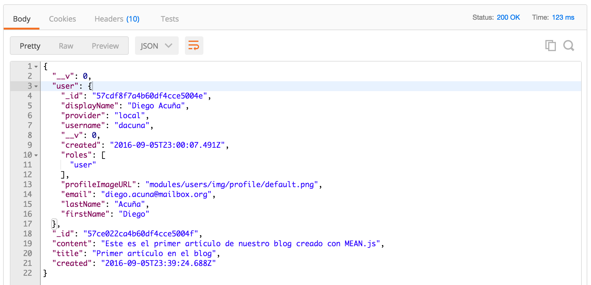
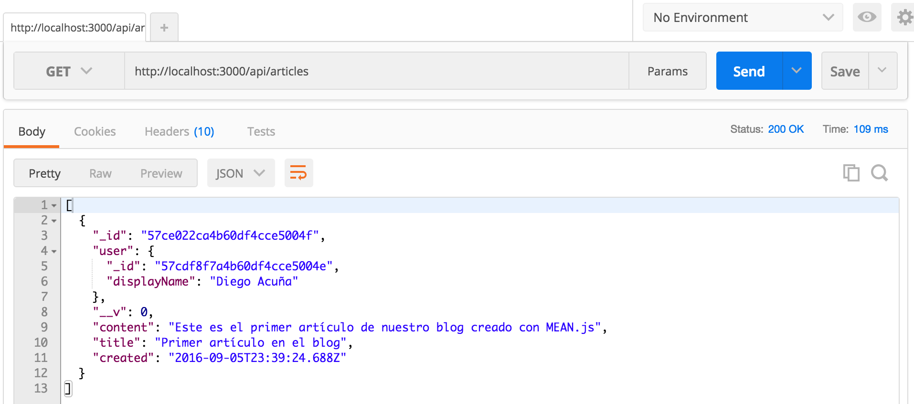

Desarrollo web orientado a API's y Microservicios
Un enfoque moderno
Clase 5
Diego Acuña Rozas
Ing. Civil en Informática - UTFSM
diego.acuna@mailbox.org
Clase de hoy
Continuando con el backend: Stack MEAN.
- Javascript en el lado del servidor
- MongoDB
- Blog en MEAN
- Comentarios finales
Estudiaremos el stack de una forma que les permita analizar a futuro otras tecnologías que deseen utilizar. Es importante explorar las herramientas que quieran utilizar y conocer sus ventajas y desventajas antes de comenzar a desarrollar código en mayor profundidad.
Server-Side Javascript
Tradicionalmente conocemos javascript como un lenguaje client-side de la web (en palabras simples: solo lo ocupabamos en el navegador). Con la aparición de Node.js el panorama cambió:
- Permitió la creación de aplicaciones utilizando javascript en el lado del servidor.
- Tiene propiedades interesantes: altamente escalable, asíncrono, orientado a eventos.
- Homogeneidad: javascript en todas las capas => server-side, client-side, potencialmente en la base de datos (soporte json)
Arquitectura de Node.js

Stack MEAN
La idea es utilizar javascript en todas las capas de nuestra aplicación:
- MongoDB: Base de datos orientada a documentos (en formato JSON)
- ExpressJS: framework de aplicaciones web "lightweight"
- AngularJS: framework javascript client-side. "HTML enhanced for web apps!"
- Node.js: javascript runtime environment. El "núcleo" de MEAN
Stack MEAN: requerimientos
Recuerden que el foco es desarrollar el backend de nuestra API REST, por este motivo por ahora dejaremos AngularJS de lado y solo nos enfocaremos en las tecnologías server-side.
- Node.js: (ubuntu=apt-get, fedora/centOS=yum, o desde las fuentes=make - make install)
- MongoDB: instrucciones para cada OS en el sitio de MongoDB
-
Grunt: herramienta de construcción de apps (build tool) para javascript
npm install -g grunt-cli -
bower: gestor de dependencias para javascript
npm install -g bower
Stack MEAN: requerimientos
Si bien, para nuestro stack solo necesitamos MongoDB (ya lo instalamos), Node.js (ya lo instalamos), AngularJS (no lo utilizaremos por ahora), solo nos queda instalar ExpressJS y podremos comenzar a desarrollar.
- MEAN.js: provee de una estructura inicial para nuestro proyecto basado en el stack MEAN. Es muy útil para que no tengamos que estar configurando todo nosotros.
npm install -g bower
npm install -g grunt-cli
npm install -g yo #yeoman
npm install -g generator-meanjs
yo meanjs
Grunt
Grunt nos permitirá ejecutar de forma automática tareas que realizaremos de manera repetitiva en nuestro workflow. Es una herramienta simple de configurar y muy útil (en cualquiero tipo de proyectos web no solo en el stack MEAN).
Grunt se basa en la configuración de tareas a ejecutar, el repositorio de Grunt nos provee de un gran conjunto de tareas útiles ya programadas: http://gruntjs.com/plugins
Stack MEAN
Si la instalación de las dependencias (con npm) y nuestra instalación de MongoDB la realizamos correctamente entonces al ejecutar (desde el directorio de nuestra app):
grunt
se ejecutará automáticamente la tarea por defecto de nuestra configuración Grunt. Dicha tarea inicia nuestra aplicación y el servidor de node en el puerto 3000 (http://localhost:3000):
Nuestro blog en MEAN
OBSERVACIÓN: Recuerden que solo estamos desarrollando el backend por lo que la vista anterior era solo para verificar que nuestra instalación fue correcta.
Veamos la estructura de nuestra aplicación para entender que partes modificar:
- config/: archivos de configuración de la app. Se separan por environments. El concepto es similar a rails.
- modules/: el código de nuestra app en sí. MEAN.js separa una app en modulos (para reutilización). Similar a por ejemplo frameworks como Django o Symfony.
- modules/mi_modulo/client: frontend de la aplicación (AngularJS).
- modules/mi_modulo/server: backend de la aplicación
- bower.json: archivo de dependencias del frontend.
- package.json: archivo de dependencias del backend.
Nos enfocaremos en el código del backend (modules/mi_modulo/server).
Nuestro blog en MEAN
Al iniciar la aplicación con yeoman, nos deberia haber consultado si es que queríamos el módulo de artículos como ejemplo en nuestra app. Para simplificar el desarrollo coloquemos que sí. Así comenzaremos con un codebase de ejemplo.
Blog en MEAN: Modelo
En el directorio modules/articles/server/models encontraremos el archivo de modelo para un post de nuestro blog: article.server.model.js:
'use strict';
/**
* Module dependencies.
*/
var mongoose = require('mongoose'),
Schema = mongoose.Schema;
/**
* Article Schema
*/
var ArticleSchema = new Schema({
created: {
type: Date,
default: Date.now
},
title: {
type: String,
default: '',
trim: true,
required: 'Title cannot be blank'
},
content: {
type: String,
default: '',
trim: true
},
user: {
type: Schema.ObjectId,
ref: 'User'
}
});
mongoose.model('Article', ArticleSchema);
MongoDB
Recordemos que no estamos trabajando con un motor de DB relacional si no que estamos utilizando MongoDB. MongoDB es un motor que almacena documentos en formato JSON. Algunas propiedades:
- Schemaless: en MongoDB no tenemos esquemos fijos para definir los documentos que guardemos. Cada instancia de un documento puede poseer atributos distintos.
- Escalabilidad: en general los motores documentales poseen buenas capacidades de escalabilidad dado que dejan de lado algunas otras propiedades de los motores relacionales (ACID).
- Modelo auto-descriptivo: basta con ver un documento para comprender la colección con la que estamos trabajando.
- Modelo simple: MongoDB trabaja con objetos JSON.
Mongoose
Es útil disponer de software que nos permita trabajar más comodamente con nuestra base de datos. En rails utilizabamos ActiveRecord. Para el stack MEAN la herramienta seleccionada es Mongoose. Mongoose provee una herramienta sencilla para modelar nuestros objetos desde y hacia MongoDB y nuestra app:
var mongoose = require('mongoose');
mongoose.connect('mongodb://localhost/test');
var Cat = mongoose.model('Cat', { name: String });
var kitty = new Cat({ name: 'Zildjian' });
kitty.save(function (err) {
if (err) {
console.log(err);
} else {
console.log('meow');
}
});
Mongoose
Mongoose permite definir un esquema flexible para trabajar con nuestros documentos en MongoDB. Además, ofrece funcionalidades para:
- Validación: antes de procesar un documento hacia la DB queremos validar los datos (similar a rails)
- Query Building: una de las grandes ventajas de MongoDB es su sintaxis de consultas la cual es muy flexible. Mongoose expone la misma sintaxis.
- Business logic hooks: incluir funcionalidades tipo pre-save o after-save.
Nuestro modelo
Revisemos nuestro modelo en Mongoose nuevamente:
...
/**
* Article Schema
*/
var ArticleSchema = new Schema({
created: {
type: Date,
default: Date.now
},
title: {
type: String,
default: '',
trim: true,
required: 'Title cannot be blank'
},
content: {
type: String,
default: '',
trim: true
},
user: {
type: Schema.ObjectId,
ref: 'User'
}
});
mongoose.model('Article', ArticleSchema);
- Posee un título, contenido, fecha de creación y un usuario (?)
- Notar que el usuario constituye una referencia ¿a qué?
Nuestro modelo
Mean.js creó automáticamente un esquema para manejar usuarios (ya que es un requerimiento típico). El código se encuentra en el módulo users (modules/users).
¿Relaciones en nuestra base de datos de objetos? ¿no era NoSQL?
El concepto de relación (en el sentido de relacional) no tiene sentido en una base de datos documental pero en términos de reutilización a veces es conveniente que podamos referenciar documentos entre ellos:
var ArticleSchema = new Schema({
user: {
type: Schema.ObjectId,
ref: 'User'
}
});
Estamos referenciando un documento de la colección de Usuarios (User) en nuestro documento de artículos.
Rutas y controlador
Ya tenemos el modelo, por ahora con los atributos que tiene nos basta. Veamos donde está la funcionalidad en sí de nuestra app. Similar a rails, MEAN.js posee un archivo con las rutas de nuestro moódulo y un archivo para cada controlador. Veamos las rutas:
var articlesPolicy = require('../policies/articles.server.policy'),
articles = require('../controllers/articles.server.controller');
module.exports = function (app) {
// Articles collection routes
app.route('/api/articles').all(articlesPolicy.isAllowed)
.get(articles.list)
.post(articles.create);
// Single article routes
app.route('/api/articles/:articleId').all(articlesPolicy.isAllowed)
.get(articles.read)
.put(articles.update)
.delete(articles.delete);
// Finish by binding the article middleware
app.param('articleId', articles.articleByID);
};
Rutas y controlador
El código es bastante autoexplicativo:
var articlesPolicy = require('../policies/articles.server.policy'),
//la variable articles es una referencia a nuestro controlador
articles = require('../controllers/articles.server.controller');
module.exports = function (app) {
// se define una url fija. Para cada url podemos especificar los distintos verbos
// http a los que respondera, en este caso get y post
app.route('/api/articles').all(articlesPolicy.isAllowed)
// a cada verbo le asignamos un metodo de nuestro controlador
.get(articles.list) // para get el metodo es list
.post(articles.create); //para post el metodo es create
// Single article routes
app.route('/api/articles/:articleId').all(articlesPolicy.isAllowed)
.get(articles.read)
.put(articles.update)
.delete(articles.delete);
// ¿Recuerdan el set_post en rails? el middleware articleByID es exactamente lo mismo
app.param('articleId', articles.articleByID);
};
Policies
Veamos el código de las policies para entender que son:
'use strict';
/**
* Module dependencies.
*/
var acl = require('acl');
// Using the memory backend
acl = new acl(new acl.memoryBackend());
/**
* Invoke Articles Permissions
*/
exports.invokeRolesPolicies = function () {
acl.allow([{
roles: ['admin'],
allows: [{
resources: '/api/articles',
permissions: '*'
}, {
resources: '/api/articles/:articleId',
permissions: '*'
}]
}, {
roles: ['user'],
allows: [{
resources: '/api/articles',
permissions: ['get', 'post']
}, {
resources: '/api/articles/:articleId',
permissions: ['get']
}]
}, {
roles: ['guest'],
allows: [{
resources: '/api/articles',
permissions: ['get']
}, {
resources: '/api/articles/:articleId',
permissions: ['get']
}]
}]);
};
/**
* Check If Articles Policy Allows
*/
exports.isAllowed = function (req, res, next) {
var roles = (req.user) ? req.user.roles : ['guest'];
// If an article is being processed and the current user created it then allow any manipulation
if (req.article && req.user && req.article.user.id === req.user.id) {
return next();
}
// Check for user roles
acl.areAnyRolesAllowed(roles, req.route.path, req.method.toLowerCase(), function (err, isAllowed) {
if (err) {
// An authorization error occurred.
return res.status(500).send('Unexpected authorization error');
} else {
if (isAllowed) {
// Access granted! Invoke next middleware
return next();
} else {
return res.status(403).json({
message: 'User is not authorized'
});
}
}
});
};
Las policies definen un sistema de permisos de acceso para los usuarios (generalmente basado en roles) a las acciones y métodos de nuestra aplicación.
El controlador
Ya hemos revisado el modelo, las rutas y el sistema de permisos. Veamos ahora el controlador. Nos interesa primero crear un post así que veamos la función create:
/**
* Create a article
*/
exports.create = function (req, res) {
// en req.body recibimos el json con el articulo (lo que envia el cliente)
var article = new Article(req.body);
// mean.js expone al usuario autenticado (o no) en la peticion
article.user = req.user;
// simplemente guardamos, mongoose se encarga del resto
article.save(function (err) {
// si es que hubo un error (por ejemplo validacion) se informa al cliente
if (err) {
return res.status(400).send({
message: errorHandler.getErrorMessage(err)
});
} else {
// si todo funciono bien entonces respondemos con un json del articulo
// notar que no es necesario definir una transformacion a json de nuestro
// articulo, como la DB lo almacena como json no se necesita transformar nada
res.json(article);
}
});
};
Acción create
 Necesitamos un usuario para pasar correctamente por la policy.Rutas de autenticación y registro
Por defecto, MEAN.js creó por nosotros un módulo para el manejo de usuarios. Además, en nuestro módulo de artículos agregó policies para manejar el acceso a los métodos de nuestro controlador. Lo que necesitamos ahora es un usuario para poder comprender el proceso de autenticación. En la documentación de MEAN.js podemos encontrar las rutas (o viendo el archivo de routing del módulo de usuarios) para usuarios:
- GET http://localhost:3000/api/users/me: Returns the current authenticated user.
- POST http://localhost:3000/api/auth/signup: This is used to sign up a user using username and password.
- POST http://localhost:3000/api/auth/signin: This is used to sign in a user using username and password.
- GET http://localhost:3000/api/auth/signout: This is used to sign out the current user.
Primero registremos un usuario.
Registrar usuario
La acción a llamar es POST /api/auth/signup
¿De dónde vienen esos parámetros?
Registrar usuario
A continuación se muestra el código del modelo Usuario
'use strict';
/**
* Module dependencies.
*/
var mongoose = require('mongoose'),
Schema = mongoose.Schema,
crypto = require('crypto'),
validator = require('validator');
/**
* A Validation function for local strategy properties
*/
var validateLocalStrategyProperty = function (property) {
return ((this.provider !== 'local' && !this.updated) || property.length);
};
/**
* A Validation function for local strategy password
*/
var validateLocalStrategyPassword = function (password) {
return (this.provider !== 'local' || validator.isLength(password, 6));
};
/**
* A Validation function for local strategy email
*/
var validateLocalStrategyEmail = function (email) {
return ((this.provider !== 'local' && !this.updated) || validator.isEmail(email));
};
/**
* User Schema
*/
var UserSchema = new Schema({
firstName: {
type: String,
trim: true,
default: '',
validate: [validateLocalStrategyProperty, 'Please fill in your first name']
},
lastName: {
type: String,
trim: true,
default: '',
validate: [validateLocalStrategyProperty, 'Please fill in your last name']
},
displayName: {
type: String,
trim: true
},
email: {
type: String,
trim: true,
unique: true,
default: '',
validate: [validateLocalStrategyEmail, 'Please fill a valid email address']
},
username: {
type: String,
unique: 'Username already exists',
required: 'Please fill in a username',
trim: true
},
password: {
type: String,
default: '',
validate: [validateLocalStrategyPassword, 'Password should be longer']
},
salt: {
type: String
},
profileImageURL: {
type: String,
default: 'modules/users/img/profile/default.png'
},
provider: {
type: String,
required: 'Provider is required'
},
providerData: {},
additionalProvidersData: {},
roles: {
type: [{
type: String,
enum: ['user', 'admin']
}],
default: ['user']
},
updated: {
type: Date
},
created: {
type: Date,
default: Date.now
},
/* For reset password */
resetPasswordToken: {
type: String
},
resetPasswordExpires: {
type: Date
}
});
/**
* Hook a pre save method to hash the password
*/
UserSchema.pre('save', function (next) {
if (this.password && this.isModified('password') && this.password.length > 6) {
this.salt = crypto.randomBytes(16).toString('base64');
this.password = this.hashPassword(this.password);
}
next();
});
/**
* Create instance method for hashing a password
*/
UserSchema.methods.hashPassword = function (password) {
if (this.salt && password) {
return crypto.pbkdf2Sync(password, new Buffer(this.salt, 'base64'), 10000, 64).toString('base64');
} else {
return password;
}
};
/**
* Create instance method for authenticating user
*/
UserSchema.methods.authenticate = function (password) {
return this.password === this.hashPassword(password);
};
/**
* Find possible not used username
*/
UserSchema.statics.findUniqueUsername = function (username, suffix, callback) {
var _this = this;
var possibleUsername = username + (suffix || '');
_this.findOne({
username: possibleUsername
}, function (err, user) {
if (!err) {
if (!user) {
callback(possibleUsername);
} else {
return _this.findUniqueUsername(username, (suffix || 0) + 1, callback);
}
} else {
callback(null);
}
});
};
mongoose.model('User', UserSchema);
Parece que el atributo provider es obligatorio, sin embargo yo no lo especifiqué en la petición que realicé. Veamos que responde el backend...
Crear usuario
La respuesta del backend:
Por lo visto el usuario se creó correctamente ¿acaso la validación no está funcionando? para salir de la duda veamos el código del controlador...
Crear usuario
La acción para crear un usuario está en el archivo modules/users/server/controllers/users/users.authentication.server.controller.js
/**
* Signup
*/
exports.signup = function (req, res) {
// For security measurement we remove the roles from the req.body object
delete req.body.roles;
// Init Variables
var user = new User(req.body);
var message = null;
// Add missing user fields
user.provider = 'local'; // ATENCION A ESTA LINEA
user.displayName = user.firstName + ' ' + user.lastName;
// Then save the user
user.save(function (err) {
if (err) {
return res.status(400).send({
message: errorHandler.getErrorMessage(err)
});
} else {
// Remove sensitive data before login
user.password = undefined;
user.salt = undefined;
req.login(user, function (err) {
if (err) {
res.status(400).send(err);
} else {
res.json(user);
}
});
}
});
};
Estamos automáticamente asignando un valor al atributo provider, no es que la validación no haya funcionado. Provider es un atributo que maneja la librería de autenticación de MEAN.js llamada Passport.
Iniciar Sesión
Ya tenemos nuestro usuario creado. Ahora nos vamos a autenticar para poder postear un artículo. Según las rutas del módulo de usuario, debemos ejecutar un POST a /api/auth/signin:
Iniciar Sesión
OK! al parecer estamos autenticados. En una API REST real, deberíamos recibir un token con el cual realizaremos futuras peticiones pero esto lo veremos más adelante en la clase de seguridad de API's REST. Como adelanto, típicamente el proceso funciona así:
- El usuario se autentica en la API. El backend verifica que las credenciales son correctas.
- Si las credenciales son correctas entonces responde típicamente con un HTTP Code 200 y adjunta un token (string aleatorio de un largo adecuado).
- Cuando el usuario quiera ejecutar alguna llamada a la API que necesite autenticación deberá adjuntar el token a la petición. Tradicionalmente esto se realiza mediante una cabecera HTTP denominada Authorization (Bearer token).
- Potencialmente, el backend puede solicitar que el usuario "refresque" su autenticación después de un determinado tiempo (refresh token).
Crear Artículo
Volvamos a lo nuestro. Ya estamos autenticados, veamos si podemos crear un artículo. Esto según nuestras rutas se encuentra en POST /api/articles:
Antes de hacer la petición veamos el código de la acción para crear artículos. Este se encuentra en el controlador de nuestro módulo de artículos article.server.controller.js y corresponde al método create.
Crear Artículo
Código del método create:
/**
* Create a article
*/
exports.create = function (req, res) {
var article = new Article(req.body);
article.user = req.user;
article.save(function (err) {
if (err) {
return res.status(400).send({
message: errorHandler.getErrorMessage(err)
});
} else {
res.json(article);
}
});
};
El código es sencillo. Es importante además notar que el usuario del artículo se asigna de manera manual al usuario que viene de la petición (req) la cual es automáticamente asignado por passport.
Crear Artículo
Veamos ahora la respuesta del servidor de nuestra petición:
Perfecto! nuestra acción funciona correctamente. Probemos listando todos los post...
Listar Artículos
Ejecutemos una petición a GET /api/articles:
Analicemos el código de esta acción...
Listar Artículos
/**
* List of Articles
*/
exports.list = function (req, res) {
Article.find().sort('-created').populate('user', 'displayName').exec(function (err, articles) {
if (err) {
return res.status(400).send({
message: errorHandler.getErrorMessage(err)
});
} else {
res.json(articles);
}
});
};
Utilizamos mongoose para traer los artículos (.find()), el método populate permite obtener la referencia del usuario (desde otro documento) a cada artículo (¿recuerdan el ref en la definición del modelo de Article?).
Ejercicios
- Prueben con POSTMAN las acciones de actualizar y eliminar un post.
- Creen nuevos usuarios y analicen lo que retorna el listar todos los post (GET a /api/articles)
- ¿Un usuario x puede editar un post de un usuario y? si la respuesta es no, ¿dónde está el código que maneja esa lógica?
- Agregar un sistema de comentarios simple a nuestros artículos (similar a lo que se hizo en el sistema rails)
Comentarios finales
- Durante estos ejemplos no hemos escrito ninguna línea de código. Es importante comprender las herramientas antes de poder utilizarlas.
- La gran mayoría de frameworks poseen scaffoldings que nos ahorran tiempo, tomense el tiempo de entender el código del scaffold antes de escribir su propio código. Entiendan el "idioma" del framework.
- El stack MEAN permite un desarrollo ágil y para aquellos que se sientan cómodos con javascript es una gran opción.
- El uso de un solo lenguaje en todas las capas simplifica el desarrollo y testing de una app. Cada pieza del stack MEAN posee ventajas significativas (a costa de perder propiedades deseables) frente a un stack tradicional. Es importante balancear los beneficios y desventajas al tomar la decisión de que stack utilizar.